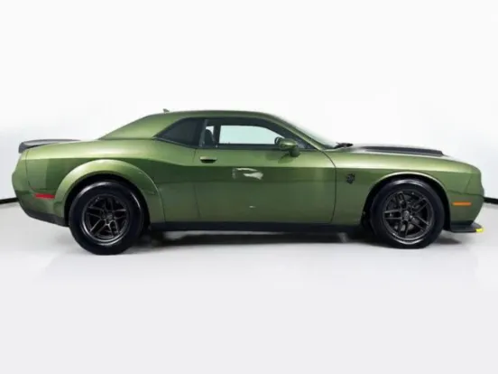
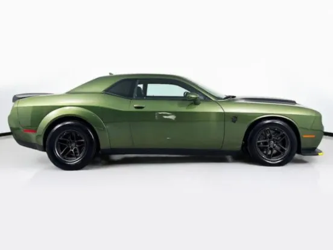

Dodge Challenger SRT Demon
 



Ficha técnica completa
- Motor: 6.2 L V8 Supercharged
- Potência: 1025 cv (com modificações)
- 0–100 km/h: ~2.3 s (em configuração drag)
- Tração: Traseira
Dados principais
6.2 V8 | 1025 cv | R$ 1.500.000
Descrição
O SRT Demon é um muscle car projetado para arrancadas: potência monstruosa, pneus largos e preparação específica para arrancadas em pista.